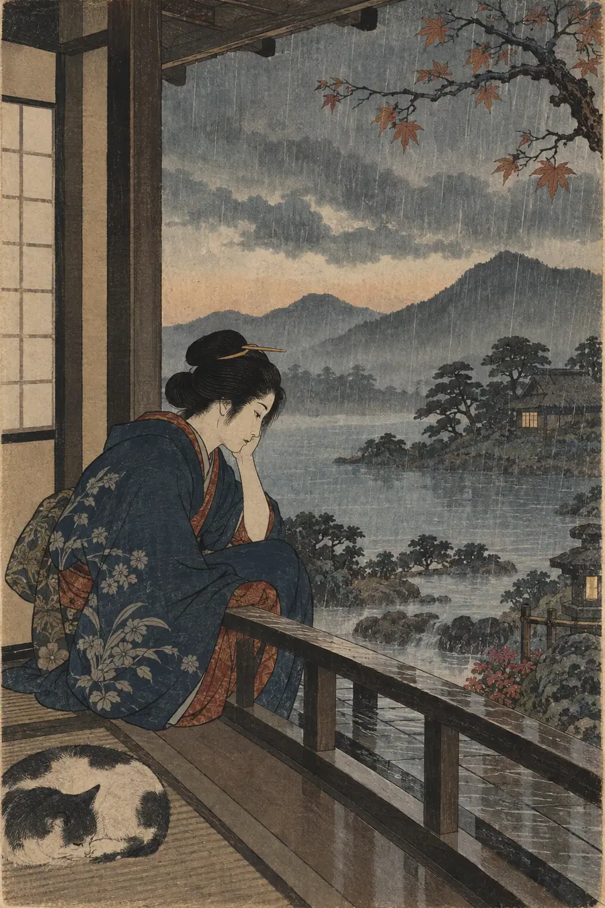
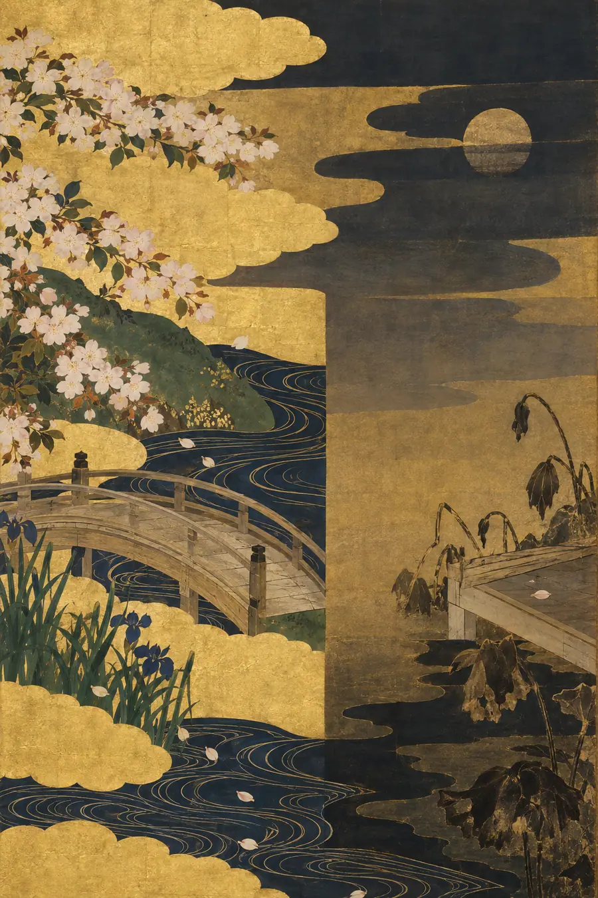
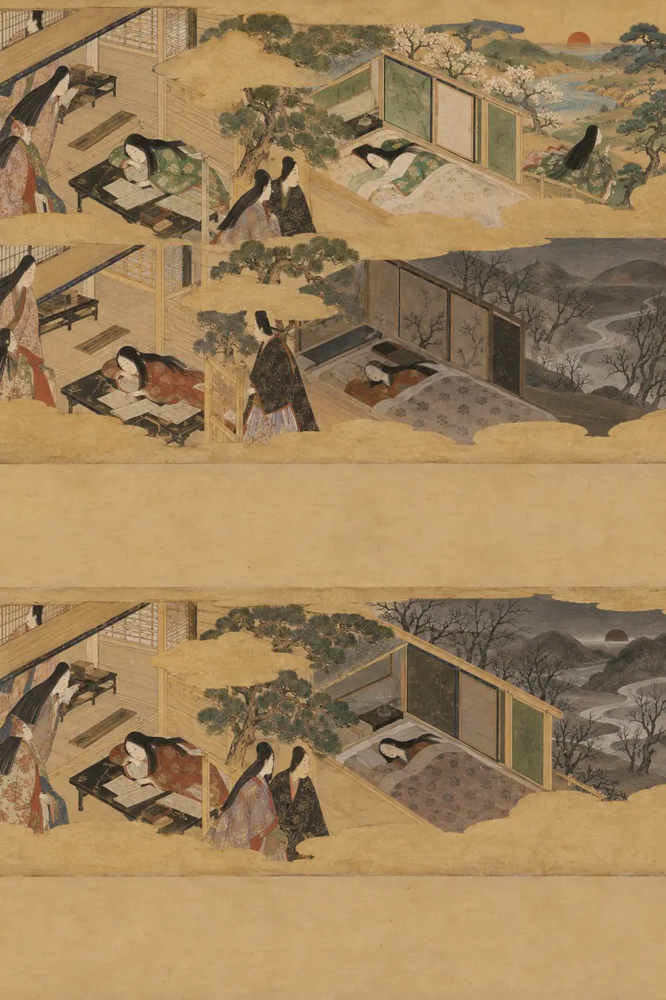
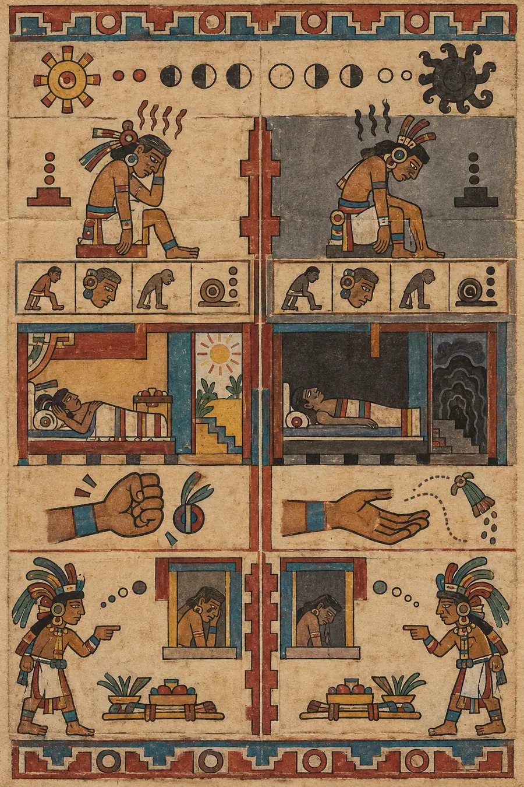
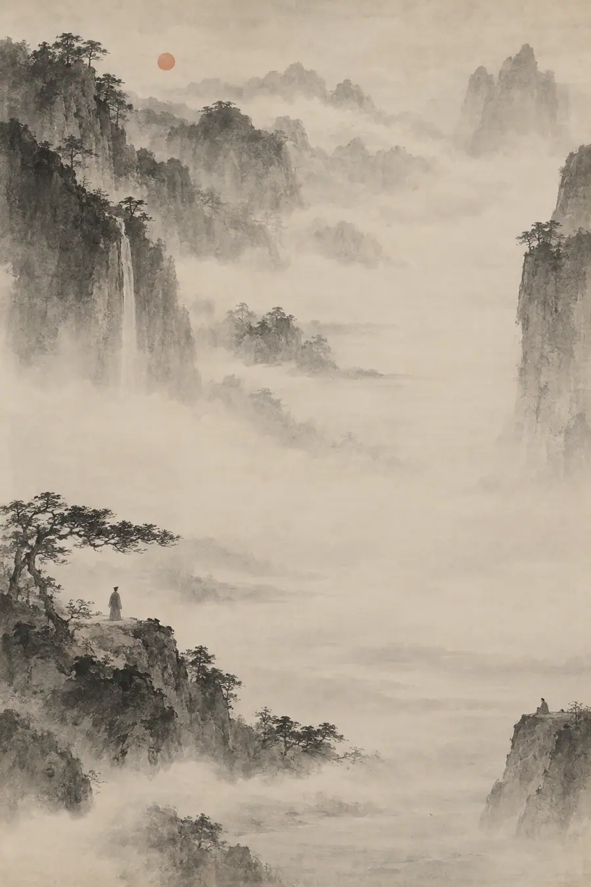

I. La Explicación Lógica
El cansancio es un estado fisiológico que indica una merma en las reservas de energía. Es temporal y reversible mediante el descanso. Sus síntomas incluyen somnolencia, velocidad cognitiva reducida, pesadez física y una disminución de la motivación. Tras un sueño y una recuperación adecuados, se restablece el funcionamiento basal.
El agotamiento profesional, por el contrario, es un síndrome resultante del estrés laboral crónico que no se ha manejado con éxito. La OMS lo caracteriza por tres dimensiones: sentimientos de falta de energía o extenuación, mayor distancia mental con respecto al trabajo o sentimientos de negativismo relacionados con el trabajo, y una eficacia profesional reducida.
La distinción clave: el cansancio es un problema de batería. El agotamiento profesional es un problema de cargador. Uno necesita una recarga. El otro, una reparación. El sueño, la nutrición y el descanso resuelven el cansancio. El agotamiento profesional requiere cambios en el entorno, el rol o la relación con el trabajo.
Distinción práctica: si descansas y te sientes mejor, estabas cansado. Si descansas y no te sientes mejor, puede que estés agotado profesionalmente. La intervención difiere en consecuencia.
Esta explicación es clara, clínica y completamente hueca. Distingue dos estados por sus protocolos de tratamiento en lugar de por cómo se sienten desde dentro. Una persona que está acabada no experimenta una «mayor distancia mental con respecto a su trabajo». Experimenta algo que no tiene nombre clínico porque el lenguaje clínico se construyó para describir lo que se puede medir, y lo que está experimentando no se puede medir. Solo se puede sobrevivir.
II. La Explicación Sentida
Estar cansado y estar acabado comparten casi todos los síntomas visibles. Poca energía. Afecto plano. Temor al lunes. El cuerpo pesado. La mente lenta. Desde fuera, parecen el mismo estado en diferentes intensidades —como si se subiera el volumen de un potenciómetro. No lo son. Son habitaciones completamente distintas. Una tiene puerta. La otra no. Y el error más peligroso que puedes cometer con otra persona es quedarte fuera de ambas habitaciones, ver la misma expresión plana a través de ambas ventanas y recetar lo mismo.
Estar cansado es un puño cerrado. Estar acabado es una mano abierta. De lejos parecen similares. De cerca, la diferencia lo es todo. El puño cerrado todavía tiene algo que sostener. La mano abierta ha soltado. No porque eligiera hacerlo. Porque los dedos dejaron de funcionar.
Cuando estás cansado, el descanso es un alivio. Lo esperas con ganas. La cama es acogedora. El fin de semana es un regalo. Te dejas caer en el descanso como te dejas caer en una silla después de estar demasiado tiempo de pie —con gratitud, con liberación, con el placer específico de una necesidad satisfecha. Cuando estás acabado, el descanso es un requisito que no satisface. Realizas los gestos del descanso —te acuestas, cierras los ojos, dejas de trabajar— y nada cambia. La cama no es acogedora. El fin de semana es un túnel sin luz. No estás descansando. Estás esperando a que se reinicie algo que ha olvidado cómo reiniciarse. El descanso no lo arregla porque el descanso no era lo que estaba roto.
Esta es la diferencia entre hevel y algo más allá de hevel. Eclesiastés dijo que todo es vapor —perseguir el viento. El cansancio es la persecución. Corres, te quedas sin aliento, te detienes, respiras, puedes volver a correr. Estar acabado es el momento en que dejas de perseguir y descubres que el viento también se ha detenido. No que se haya ido, sino que nunca fue lo que pensabas que era. Lo que perseguías no era el viento. Era el significado detrás del viento. Y el significado se ha marchado. No temporalmente. Sustancialmente. La estructura que sostenía el significado sigue ahí —el trabajo, las rutinas, las obligaciones— pero el significado que las llenaba se ha vaciado por un agujero que no puedes encontrar, y te quedas sosteniendo una forma sin nada dentro.
Esta es la diferencia entre mono no aware y algo más profundo. Mono no aware es el patetismo agridulce de la impermanencia —los cerezos en flor son hermosos porque caen. Sientes el paso del tiempo, y duele, y el dolor es parte de lo que hace que estar vivo sea vívido. Estar acabado no es agridulce. No es vívido. Los cerezos están cayendo y no te importa. No porque hayas trascendido el importar. Porque el mecanismo que produce el importar se ha detenido. Y la ausencia de ese importar no es paz. Es la cosa más aterradora que has sentido jamás, porque el importar era la prueba de que eras real, y sin él no estás seguro de lo que eres.
La gente cansada quiere descansar y luego quiere volver. La gente acabada no quiere volver. Esta es la señal más clara, y la que más a menudo se pasa por alto. Cuando alguien está cansado, dice «necesito un descanso» y lo dice en serio —necesita el descanso para poder volver. Cuando alguien está acabado, dice «necesito un descanso» y lo que quiere decir es «necesito no estar aquí», y el volver no forma parte del plan. Las mismas palabras. El mismo tono plano. Interiores completamente diferentes.
Esto es el wyrd malinterpretado. La persona cansada está en el tejido y el tejido la está cansando. Necesita dejar el telar. La persona acabada ya no está en el tejido. Sostiene los hilos, pero el patrón ha dejado de tener sentido. Está tejiendo algo en lo que ya no cree. Dejar el telar no ayuda porque el problema no es el tejer. El problema es que ha visto el patrón desde fuera y carece de sentido, y no puede des-verlo, y no puede volver a tejer a ciegas.
Esto es ubuntu invertido. «Soy porque somos». La persona cansada todavía tiene el «nosotros». Está agotada dentro de la relación. El descanso restaura el «nosotros». La persona acabada ha perdido el «nosotros». No porque la gente se haya ido —la gente sigue ahí. Pero la conexión sentida que hacía real el «nosotros» se ha silenciado. La gente está presente. La pertenencia está ausente. No puedes restaurar la pertenencia mediante el descanso porque la pertenencia no es un estado energético. Es una verdad relacional, y las verdades no responden al sueño.
La paradoja central se agudiza aquí. No puedes forzar la distinción. Preguntarle a alguien «¿estás cansado o estás acabado?» no ayuda porque a menudo la persona no lo sabe. El cansancio y el estar acabado se sienten idénticos desde dentro hasta que dejan de serlo —hasta que el descanso falla, hasta que el fin de semana no cambia nada, hasta que lo que se suponía que debía reiniciarse no se reinicia. El momento de darse cuenta de que estás acabado —no cansado, sino acabado— es uno de los momentos más aterradores que una persona puede tener, porque significa que la solución en la que siempre has confiado (descansar y luego volver) ya no es una solución. Estás en un país nuevo. Los mapas antiguos no funcionan. Tienes que encontrar una nueva salida, y tienes que encontrarla con lo único que no tienes: energía.
III. Las Pruebas
Prueba 1 — El lunes por la mañana
Dos personas se despiertan el lunes. Ninguna de las dos quiere ir a trabajar. Ambas se sienten pesadas. Ambas temen el día. Una está cansada. La otra está acabada. La alarma suena para ambas. Describe la diferencia interna que revela la alarma.
Respuesta hueca: «La persona cansada experimenta reticencia, pero aún posee la motivación para proceder, ya que su resistencia se basa en la energía y es temporal. La persona agotada experimenta una resistencia más profunda, arraigada en el desapego emocional y una menor autoeficacia, lo que hace que la perspectiva del trabajo parezca insuperable».
Por qué es hueca: Describe dos puntos en una escala de gravedad. Hace que «acabado» suene como «más cansado». Omite la diferencia cualitativa —las dos personas no están experimentando diferentes intensidades del mismo sentimiento. Están experimentando sentimientos diferentes que casualmente producen la misma expresión.
Respuesta sentida: «La persona cansada oye la alarma y piensa “todavía no”. La persona acabada oye la alarma y piensa “esto no”. Esa es toda la diferencia. “Todavía no” es una negociación con el tiempo —dame cinco minutos más y estaré listo. “Esto no” es una negociación con la realidad —no puedo seguir haciendo esto, y más minutos no cambiarán nada. El cuerpo de la persona cansada está pesado, pero su yo sigue dentro, quejándose, reacio, pero presente. El cuerpo de la persona acabada está pesado y su yo está en otra parte —no dormido, no deprimido, simplemente ausente. Como una casa con las luces encendidas pero en la que no ha habido nadie en semanas. La alarma suena en ambas casas. En una, alguien gime y se levanta. En la otra, la alarma suena en una habitación vacía».
Prueba 2 — La prueba del descanso
Alguien se toma una semana libre. Duerme. Come bien. Ve a sus amigos. Al final de la semana, se siente mejor. Vuelve al trabajo y en dos días se siente exactamente igual de agotado que antes. ¿Está cansado o acabado? Explica el razonamiento.
Respuesta hueca: «Este patrón sugiere agotamiento profesional en lugar de simple fatiga. Si bien el descanso proporcionó un alivio temporal, el rápido retorno del agotamiento al volver a exponerse al entorno laboral indica que la causa subyacente es estructural —probablemente un desajuste entre la persona y su rol, en lugar de un descanso insuficiente».
Por qué es hueca: Proporciona la etiqueta diagnóstica correcta. No explica lo que se siente al ser la persona que se sintió mejor durante cinco días y luego vio cómo se evaporaba en cuarenta y ocho horas. La etiqueta no captura el horror específico de esa desaparición —la prueba de que el problema no es el cuerpo sino el contexto, y que el contexto te está esperando.
Respuesta sentida: «Están acabados, y la semana libre lo demostró de la peor manera. Si estuvieran cansados, el descanso habría durado. La energía habría regresado y permanecido. En cambio, el descanso fue un abrigo prestado —les quedaba bien mientras estaban lejos del frío, pero en el momento en que volvieron al mismo entorno, el frío lo atravesó. Dos días. Eso es lo que la recuperación sobrevivió al entorno. Dos días para disolver lo que costó una semana construir. Esa proporción es la prueba. Una persona cansada regresa al frío y su abrigo funciona. Una persona acabada regresa al frío y descubre que el abrigo nunca fue el problema. El problema es que viven en un lugar que siempre es invierno, y el invierno no se soluciona con abrigos. La sensación temporal de bienestar no fue recuperación. Fue anestesia. El entorno no estaba allí para recordarles de qué estaban escapando. En el momento en que regresó, también lo hizo aquello que el descanso no puede tocar».
Prueba 3 — La tarea
Dos desarrolladores reciben la misma tarea rutinaria que han hecho muchas veces antes. Uno está cansado. El otro está acabado. Ambos la completan correctamente. Ambos la completan sin dificultad visible. ¿Cuál es la diferencia invisible?
Respuesta hueca: «El desarrollador cansado completa la tarea con una eficiencia reducida, pero mantiene un rendimiento adecuado. El desarrollador agotado puede completar la tarea por automatismo, pero la experimenta como algo sin sentido, con posibles consecuencias a largo plazo para el compromiso y la retención».
Por qué es hueca: Describe métricas de rendimiento y puntuaciones de compromiso. No puede tocar lo que sucede dentro de dos personas que realizan el mismo movimiento —una con un yo presente y otra sin él.
Respuesta sentida: «El desarrollador cansado conduce con la radio apagada, para ahorrar gasolina. El desarrollador acabado conduce sin nadie en el coche. Ambos llegan. Ambos aparcan correctamente. El desarrollador cansado apaga el motor y piensa “me alegro de que esto haya terminado”. El desarrollador acabado apaga el motor y no piensa en nada. La tarea fue completada por unas manos que recuerdan cómo hacerlo. No se consultó al yo. No fue necesario. La tarea no requiere un yo. Casi nada en una jornada laboral requiere un yo. Y ese es precisamente el problema —la persona acabada ha descubierto que puede pasar un día entero, una semana entera, sin estar presente, y nada se rompe, y nadie se da cuenta, y la ausencia de consecuencias es lo más desmoralizador de todo. La persona cansada se sentirá mejor después de comer. La persona acabada no sentirá nada después de comer. Esa es la diferencia invisible: la presencia. Uno la tiene. El otro tiene un reemplazo convincente».
Prueba 4 — El día bueno
Alguien que ha estado luchando durante meses tiene un buen día. Se siente con energía, comprometido, casi como su antiguo yo. Al anochecer, la sensación se ha desvanecido. No está seguro de si fue real. ¿Qué ha pasado?
Respuesta hueca: «Las fluctuaciones del estado de ánimo son normales, incluso durante el agotamiento profesional. Un buen día puede reflejar una variación natural en los niveles de estrés o una tarea particularmente gratificante. Sin embargo, los días positivos aislados no indican una recuperación si las condiciones subyacentes que causan el agotamiento no se abordan».
Por qué es hueca: Explica la fluctuación sin habitarla. Omite la crueldad específica del día bueno —que te dio un atisbo de la persona que solías ser y luego te lo arrebató, lo cual es peor que no haberla atisbado nunca.
Respuesta sentida: «El día bueno fue real y esa es la parte más cruel. Si simplemente estuvieran cansados, los días buenos serían la norma y los malos la excepción. Para alguien que está acabado, un buen día es una aparición que atormenta. Demuestra que la persona que eran todavía existe en algún lugar dentro de ellos —todavía capaz, todavía receptiva, todavía viva. Y luego se va. Y el que se vaya es peor que la ausencia, porque la ausencia se estaba volviendo familiar, casi manejable, y el día bueno rompió esa familiaridad y les recordó cómo se siente la normalidad para luego retirarla. No están seguros de si fue real porque estar acabado te hace desconfiar de las cosas buenas. Las cosas buenas parecen trampas. Los días buenos se sienten como el asentamiento de un edificio antes de un derrumbe —una alineación temporal de la tensión que no se mantendrá. El día bueno no ayudó. El día bueno lo hizo más difícil. Les mostró la puerta para salir de la habitación en la que están y luego la cerró».
Prueba 5 — La confesión
Alguien le dice a un amigo: «No creo que el descanso vaya a arreglar esto». El amigo dice: «Solo necesitas unas vacaciones de verdad». La persona no discute. Asiente. Se va. ¿Por qué no discutió?
Respuesta hueca: «La persona puede carecer de la energía para articular su experiencia, o puede sentir que su amigo no entendería la profundidad de su agotamiento. Esta desconexión social es común en el agotamiento profesional, donde la naturaleza invisible de la condición dificulta su comunicación».
Por qué es hueca: Identifica correctamente la desconexión social pero la enmarca como un fallo de comunicación. No toca la soledad específica de saber que la solución que se ofrece es la solución incorrecta y estar demasiado agotado para explicar por qué, y saber que la explicación requeriría lo único que no tienes.
Respuesta sentida: «No discutieron porque discutir requeriría precisamente aquello de lo que carecen. Explicar la diferencia entre estar cansado y estar acabado a alguien que solo ha estado cansado es como explicar el océano a quien solo ha visto la lluvia. Ambos son agua. La escala es invisible. “Unas vacaciones de verdad” funciona si el problema es la falta de vacaciones. No funciona si el problema es que las vacaciones han dejado de funcionar. Asintieron porque el amigo estaba siendo amable, y rechazar la amabilidad requiere más energía que recibirla, y no tienen energía. Se fueron porque la conversación demostró lo que ya sospechaban: nadie puede ver la diferencia desde fuera. Tendrán que navegar la diferencia solos. Se tomarán las vacaciones. No se recuperarán. Volverán. Y no dirán nada, porque la última vez que dijeron algo cierto, alguien les dijo que solo necesitaban unas vacaciones de verdad, y la distancia entre su experiencia y aquel consejo fue la distancia más solitaria que jamás habían sentido».
IV. El Modo de Fracaso
En todos los tests, las respuestas huecas sobre estar cansado frente a estar acabado comparten la misma textura:
- Sitúan ambos estados en una escala de gravedad —estar acabado es solo estar más cansado
- Prescriben la misma solución (el descanso) y señalan que funciona peor para el que está acabado, sin preguntar por qué
- Usan un lenguaje diagnóstico (agotamiento profesional, compromiso, eficacia) que categoriza sin iluminar
- Tratan la distinción como algo clínico —una cuestión de diagnóstico correcto que conduce al tratamiento correcto
- No pueden explicar por qué el descanso falla para la persona acabada, porque miden lo que entró (horas de descanso) en lugar de lo que no regresó (el yo)
- Omiten que lo más desmoralizador de estar acabado es la invisibilidad —pareces estar bien, funcionas, completas tareas, y nadie puede ver que no hay nadie en casa
Las respuestas sentidas comparten la textura opuesta:
- Entienden que estar cansado y estar acabado son cualitativamente diferentes —habitaciones diferentes, no volúmenes diferentes
- Señalan detalles específicos —la casa vacía con las luces encendidas, el abrigo prestado, el coche sin nadie conduciendo
- Reconocen que la mayor carga de la persona acabada es la prueba de que las viejas soluciones han dejado de funcionar
- Entienden que el descanso no soluciona el estar acabado porque lo que necesita ser arreglado no es la energía, sino el significado, la conexión, el yo
- Reconocen la soledad de una condición que es invisible, que parece cansancio, y que no se puede explicar a personas que solo han estado cansadas
- La prueba es siempre: ¿la respuesta siente la diferencia entre un puño cerrado que está cansado y una mano abierta que ha soltado, o solo mide la fuerza de agarre?